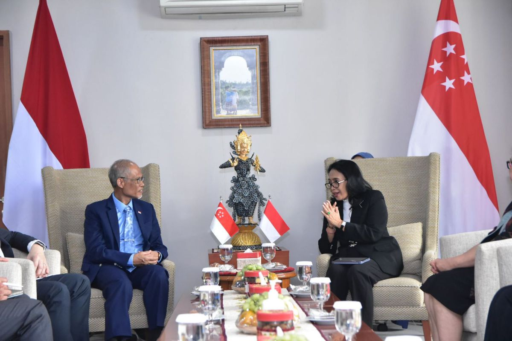
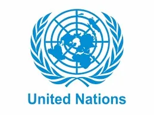
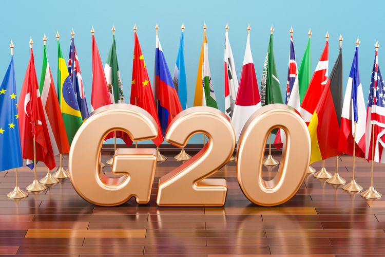
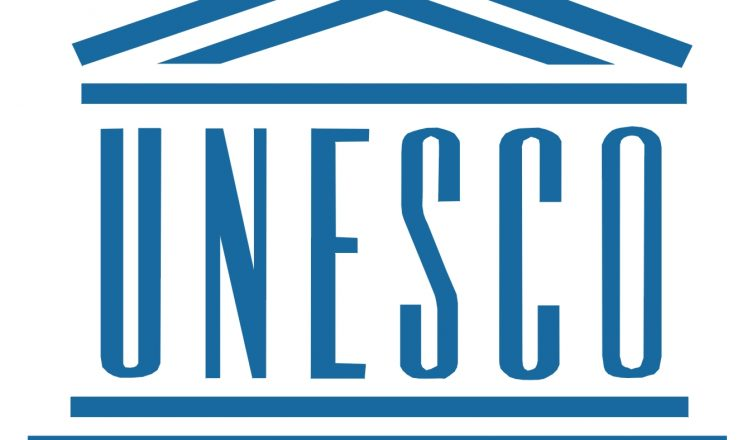
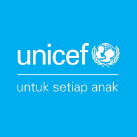

    
1. Contoh kerjasama bilateral:
Indonesia dengan Singapura di bidang pemberdayaan perempuan, perlindungan anak, dan pembangunan keluarga.Pemerintah Republik Indonesia dan Republik Singapura memperkuat kerja sama bilateral dalam pemberdayaan perempuan, perlindungan anak, dan pembangunan keluarga. Kedua negara sepakat untuk berbagi praktik baik dan bertukar informasi, jadwal program atau proyek, dan saling berpartisipasi dalam acara serta program-program pelatihan. Dari kerja sama tersebut, Bintang berharap bisa mengetahui lebih jauh tentang layanan helpline bagi korban kekerasan, selter atau rumah aman, dan aturan hukum untuk efek jera bagi pelaku yang dimiliki Singapura.
2. Contoh kerjasama multilateral:
ASEAN (Association of Southeast Asian Nations) atau Perserikatan Bangsa-Bangsa (PBB). Perserikatan Bangsa-Bangsa (PBB)ini berfokus pada perdamaian dan keamanan internasional, hak asasi manusia, dan pembangunan.
3. Contoh kerjasama internasional:
Perserikatan Bangsa-Bangsa (PBB). PBB memiliki berbagai badan, seperti UNESCO, WHO, dan UNICEF, yang masing-masing menangani isu global spesifik. Perjanjian Paris tentang Perubahan Iklim pada tahun 2015, hampir seluruh negara dunia (195 negara) menandatangani Perjanjian Paris yang bertujuan untuk mengurangi emisi gas rumah kaca dan mengatasi perubahan iklim. Ini adalah contoh kerja sama internasional untuk menghadapi isu global yang mempengaruhi semua negara. Selain itu, ada Organisasi Perdagangan Dunia (WTO). WTO memfasilitasi perjanjian dan kebijakan perdagangan internasional yang memungkinkan negara-negara di dunia untuk berpartisipasi dalam perdagangan global secara adil, mengurangi tarif, dan mengatasi perselisihan perdagangan. Penyelesaian Krisis Kemanusiaan. Misalnya, saat terjadi krisis kemanusiaan akibat perang atau bencana alam, berbagai negara dan lembaga internasional (seperti Palang Merah Internasional, PBB, dan negara-negara donor) bekerja sama untuk memberikan bantuan kemanusiaan, termasuk pengiriman obat-obatan, makanan, dan tempat pengungsian. Selain itu, juga adanya G20 ini merupakan forum internasional yang terdiri dari 19 negara besar dan Uni Eropa, yang berfungsi untuk membahas isu-isu ekonomi global. G20 bekerja untuk memperkuat ekonomi dunia melalui kebijakan yang saling mendukung antarnegara anggota.